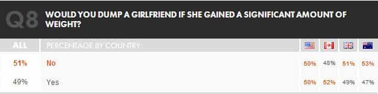

Samseau is a player philosopher psychologist who enjoys a good discussion. You can follow him on Twitter.


Although us Kings criticize the modern Western woman, we only do so because it is the modern Western man who is to blame for our broken state of gendered affairs. Men are naturally the stronger and superior sex, so it follows that women can only do what men grant them. I do not write to convince women to change their ways, but instead to educate the minds of men. The more I study Western culture, the more I realize how well-trained and obediently my fellow Western “males” (as undeserving of this title as they may be) give their power to the opposite sex.
When men relinquish their power over women, women will always take advantage of them. And after all, why shouldn’t they? Women merely take advantage of what is offered to them. If some man was sacrificing his life for your benefit, wouldn’t you accept his patronage?
Often times it is difficult for the average Western males understand how much of a weak, amorphous, and utterly subservient coward he is, but, thanks to the 2013 Askmen dating survey, denial is no longer an option for the Western beta. Since this survey mostly pertains to young men, and Askmen’s audience is millions strong, I find it to be a good indicator of what the future will bring.
Also, as a technical note, the survey only polled Anglo countries, but given the influence of Anglo countries I believe it is safe to assume all Western countries suffer from the same problems with their men.
The survey opens with questions about marriage. Nearly three-fourths of men believe in marriage and just as many believe there is little to no reason for a pre-nup.
In other words:

At first I thought that Q2 was worded poorly; there was no option that said, “I would accept marriage if it wasn’t rigged,” but when I read Q4 I realized if that option had existed few would have chosen it. I cannot understand anyone who would get married without a pre-nup, let alone get married, since you forfeit so many of your basic rights when you do so.
Indeed, most men do not know that pre-nups are still a bad deal, as judges will usually side with the female. If the man was rich and makes a poor woman sign the pre-nup, magically the judges will determine that the pre-nup was invalid. Even if she was cheating on you. (<—- You won’t believe this link until you click on it.)
If you have children, the wife also gets them unless you can prove she is a criminal or drug addict. If the husband is the breadwinner, the wife gets the children because the husband is not “the primary caretaker.” But if the husband is the stay-at-home dad, the judge will rule in favor of the woman because she has greater “capacity and disposition” to provide for her children.
Finally, I know some male feminist will read this article and think, “NO WAY! Primary caretakers always have the advantage in court. That one case you dug up is the exception.” A King’s response: “Wrong again, noob.” When a wife starts a divorce proceeding the police have strict orders to kick the husband out of the house, thus leaving the children in the hands of the mother. If the wife is the primary breadwinner, she will be able to shut off any cash to her estranged husband and prevent him from acquiring a good attorney. He will probably be unable to even afford a place to live. Then she will drag out the divorce proceedings for as long as possible, for as many years as she can, so when the judge finally rules on the case he will see that the children have been living with his mother for the past several years and thereby rule the mother as the primary caretaker.
Take a look at this man’s all too common story:
i just dont want to lose my son, and from what she said her attorney said that i will lose primary custody to her, and i cant let that happen. but right now the “status quo” is staying with her since she stole him from me, and by the time we get into the court he will have been with her for a long time.
The online attorney responds,
OK, that is not good. Is there a reason you haven’t yet hired a lawyer to file a motion for emergent custody, if it is still NEW that he is with her. What you are kind of saying now is that one upon a time, you were the primary, but now she is.
The reason he hasn’t hired a lawyer? Wow, isn’t it obvious?
i really wish you were my attorney. I unfortunately cant afford one at this time.
No matter what a man does in a Western marriage, he loses. And yet men are clamoring to get to the altar more than women are, despite how far the odds are stacked against them.
The western man never thinks with his self-interest first, even if women are doing so all the time.
So concerned with the welfare of his woman, the modern man forgets about his own. He is pure like a monk, except for the fact that he is dating a bunch of devils. “Lots of people talk and few of them know, soul of a woman was created below.”
The correct answer is “Very likely.” Why? Because if you are the kind of man who would cheat if he could get away with it, it means she’ll work harder to keep you happy and fend off possible competition. By being the kind of man who would cheat, you are less likely to be cheated on or dumped. But most guys cannot understand this because they are unable to think like a woman, and for that they must suffer.
Women must be reminded that they are replaceable and expendable in order to keep them on their best behavior. That said, make sure you never tell your woman that you cheated on her. That would be insensitive and cruel.
The way to keep a good relationship going is for the man to fool around when he gets the urge and to keep shtum afterward. Never admit and you will make the wife happy. Forget what she says. It’s what you say that counts. And say nothing.
If she asks if you’ve had other women, look into her eyes and say, “You don’t want to know,” and leave it at that. Even if you haven’t cheated on her. Because in truth, she doesn’t want to know. If you have cheated, it will hurt her, and if you haven’t, she’ll wonder if you’re still the same stud she originally fell for. Say nothing, and cheat when you need to.
The same principle applies to Q18:
I wouldn’t be surprised at all to find out that the 17% of men who are willing to share pics get more sex and female attention than the 83% of men, combined, who would refuse to share pics.
Look at the wording of the question – it is not, “Would you share racy pics that you received over the internet,” nor is it “Would you share racy pics that you received with anonymous strangers,” but “friends.” Any man who places more worth on some random chick he dates over genuine friends is extremely likely to be one massively weak beta. The other possibility is that men who voted no simply do not have good friends they can trust, in which case they do not understand that if you cannot trust someone they are not your friend.
No surprise that Britain gets the lowest score on Q18.

Q8 is particularly pathetic; there really are no excuses for why 51% of men should date a fatass. Again, look at the wording of the question. It’s not “Would you dump a wife,” but “girlfriend.” The question presumes the man is not tied to her in any significant way.
Hello dumb fucking betas – what do you think will happen if you stay with her? Is she going to get skinnier? Will you need a Viagra prescription in the future? Nearly every major world religion frowns upon gluttony. There is no excuse for fatties, or fatty fuckers. I can forgive a man who bangs a fatty, but I cannot forgive a man who seriously dates one. If you know any such men, dear readers, then the Kings here ask you to disassociate yourself from them for the good of all mankind.
Part of the reason for the Western obesity epidemic is that most Western food is disgusting and unhealthy, but the other unmentioned side of the story is that nearly half of the male population is so hard up for sex and companionship that they will date fat chicks like Lindy West.
The fact is, Western men will take anything.

Only 15% of men believe a woman starts to lose her looks at 30. It’s one thing to be a desperate man who will wife up a single mom, but to sincerely doublethink yourself into believing women do not start losing her looks until 40, 50, 60, or “never” (!) takes some serious mental gymnastics I did not even know man was capable of.
If you’ve ever wondered why so few Western men swallow the red pill, just remember it’s because they are secretly fantasizing about their size 9 coworkers that they get to talk to for 20 minutes at lunch break.
Still, there may faint signs of hope:
At the very least, nearly half of men today understand that having the balls to approach a woman you are interested in is the correct move. This question is proof that game techniques have some sort of recognition amongst the general populace. Not only does approaching first retain your power of choice as the one who starts a relationship, but 90% of women love a man with balls. To a woman, a smooth approach is more exciting than buying a new pair of shoes.
However, when we tally up the other choices we see that the majority of men have no balls, with a shocking 41% asking for an introduction by a mutual friend. I cannot imagine a more emasculating life than having to rely on friends, or internet dating, in order to get laid. Shame on you, Australia.
Yet more evidence of how sad the western male is, here only 21% of men would not pre-stalk. Let me make something very clear here. “Pre-stalking” is for women. Until you’ve banged her, what the hell is the point of doing any online research at all?
Here the try-hard and supplicating nature of the Western man is revealed, because you know he’s pre-stalking so he can fantasize how she looks naked, or to see what her interests are so he can talk about them on dates, or because he doesn’t want to say anything to offend her. All of these reasons are pathetically beta.
An alpha male is completely the opposite when it comes to dating. First of all, most alpha males avoid dates because they are boring as fuck and generally have low returns on investment. Alpha males look for other more spontaneous ways to meet women, such as through dancing, insta-dating in the daytime, or pulling from a bar or club, but sometimes dating is the most viable option a man has (especially in certain foreign countries). Second, since we are talking about Western countries, let me tell you how attractive men view dates:
They care far less about pleasing their date because they are more interested in pleasing themselves, a concept that is foreign to the beta. Whereas the beta pre-stalks, the alpha “verifies” a woman he has been banging for some time by checking up on Facebook or the internet to see if she is who she claims.
The only reason alphas date is to have fun and sex. After having his fun, the alpha will evaluate his woman’s potential for a relationship and take it from there. But if he’s just met her, why should he give her any more time than is necessary? She has no credibility or trust built with him, and until she does it’s guilty until proven innocent.
Continuing on with the concept of betas being nothing more than instruments for a woman’s pleasure, we can see how powerful this theme really is.
Behold, the modern western male:
You would think that, after all the hoops the modern man jumps through to get love and attention from women — studying hard in school and college, working out at the gym, gaining friends and social status, competing for a good job, and meeting god-knows-how-many demands women make — he would at least try to satisfy himself first in the one domain that men truly care about.
Instead, he treats himself like the human dildo pictured above. I suppose this outcome is natural given how the western male is usually raised.
Let me make myself clear. It is not bad to give a woman an orgasm. But it’s not important if you do. As the survey shows, most men believe that giving a girl an orgasm is important. They infer that if she comes, then she’ll like him more and he’ll get more sex in the long run. But this just isn’t true. The less a man cares, the more likely he’ll do all the right things in a relationship, from the bar to the bedroom. Use her, abuse her, and let her please you instead, and she’ll be far more likely to experience a powerful orgasm than if you directly try to please her. That’s because women are attracted to men, not little bitches. But you cannot fake this. You must truly not give a shit, and instead view women as objects of your pleasure.
And if you can do this, you will not find yourself in the top category for Q26:
Ultimately, when Western men lie about their sex partner count they are really lying to themselves about their satisfaction with the opposite sex. Unable to admit they have a problem, denial comes in many forms:
Short of beating the shit out of beta males, I cannot think of a way to change who they are. They are weak, pathetic little suckers who exist only to serve others. And rather than face reality, they viciously attack anyone who would expose the lies they tell themselves. If you try to show them the error of their ways, they will hate you for it. So I don’t try to convince them otherwise.
Instead of helping betas now, I just use and abuse them like women do. Why respect a beta when he cannot respect himself? Our women act like cunts because our men have no backbone or self-respect. They refuse to stand for their own self-interest and so women act like tyrants because they can. This Askmen survey merely validates this fact. I treat betas like shit, and they aren’t even aware of it. I think they like it this way.
We were born into a very strange world.
 If you like this article and are concerned about the future of the Western world, check out Roosh's book Free Speech Isn't Free. It gives an inside look to how the globalist establishment is attempting to marginalize masculine men with a leftist agenda that promotes censorship, feminism, and sterility. It also shares key knowledge and tools that you can use to defend yourself against social justice attacks. Click here to learn more about the book. Your support will help maintain our operation.
If you like this article and are concerned about the future of the Western world, check out Roosh's book Free Speech Isn't Free. It gives an inside look to how the globalist establishment is attempting to marginalize masculine men with a leftist agenda that promotes censorship, feminism, and sterility. It also shares key knowledge and tools that you can use to defend yourself against social justice attacks. Click here to learn more about the book. Your support will help maintain our operation.
Read Next: 5 Ways To Emasculate A Man
{kind=link}
{kind=link}